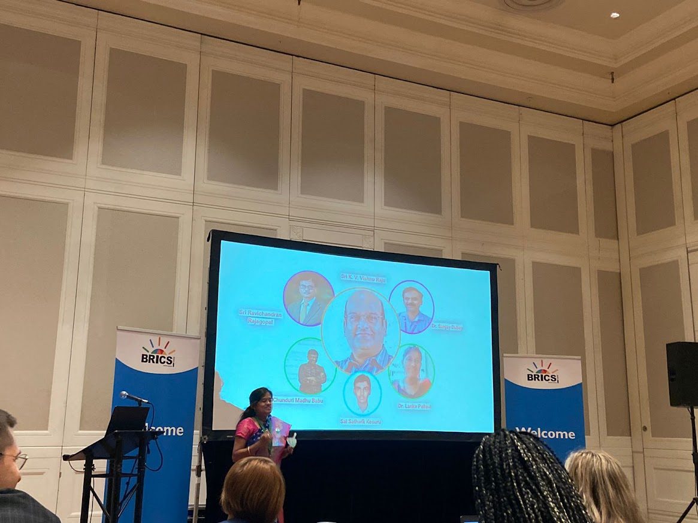

Research Assistant
Duration: July 2021 - October 2023, April 2024 - May 2025
Description
My Research Assistantship lasted for 3 years: 2 contiguous and 1 non-contiguous. I pursued Research Assistantship for building Societal Data-Driven Solutions. Initially I focused on diversity where my first Research Paper is published.

I employed the use of PowerBI Visualizations to create insights into Women Opportunities such as Scholarships, Events, and Careers. A careful analysis resulted in a conclusion that the scholarships have observed a sharp rise but events need special considerations since they are too low. Careers are steady.
I also wrote a grant proposal on Rural Women Empowerment, impacting 800 rural women by AI in Embroidery, Tailoring, etc. We have also established WeHub to increase female participation in research.
I have employed Sustainability Development Goals(SDGs) in AI on food security via Multi-Cuisine Multi-Data Prediction of Food Quality Using YOLO NAS and Human Health on Computer Vision in Capsule Vision Endoscopy.